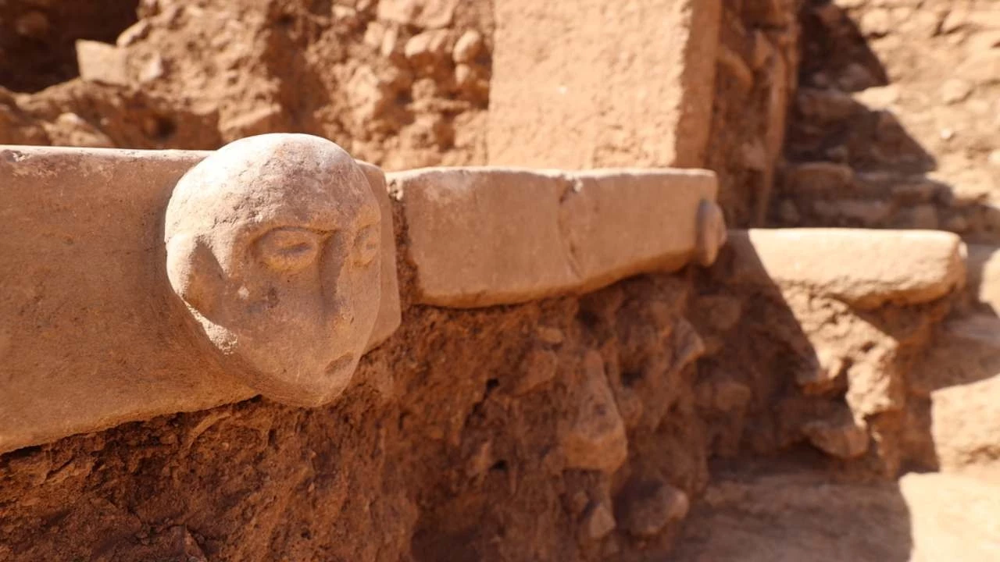
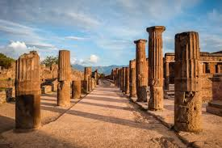

Önemli Kazı Alanları

Göbeklitepe
Dünyanın bilinen en eski tapınak kompleksi. İnsanlık tarihini değiştirmiştir.

Efes Antik Kenti
Roma döneminin en önemli ticaret ve kültür merkezlerinden biridir.

Pompeii
Vezüv Yanardağı’nın patlamasıyla korunmuş eşsiz bir Roma şehri.